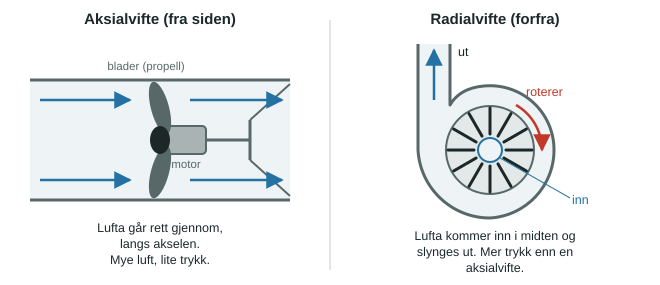
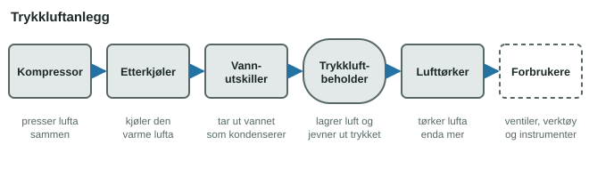

Kompressorer og vifter
Pumper flytter væske. Gass og luft flyttes med vifter og kompressorer. De ligner på pumpene, men gass oppfører seg annerledes enn væske: Den kan presses sammen, og den blir varm når den presses. Nesten alle prosessanlegg har et trykkluftanlegg, og det er kompressoren som holder det i gang.
Gass er ikke væske
En væske kan nesten ikke presses sammen. En gass kan presses sammen til en brøkdel av volumet. Det får tre følger for utstyret:
- Gassen blir varm. Når en gass presses sammen, stiger temperaturen. Kompressorer må derfor kjøles.
- Volumet endres. Gassen tar mindre plass når trykket øker. Volumet avhenger også av temperaturen. Derfor oppgis mengden gass ofte ved et bestemt trykk og en bestemt temperatur.
- Det lagres energi. En tank med gass under trykk inneholder mye energi som kan frigjøres brått. Det gjør trykkluft farligere enn vann med samme trykk.
Hvorfor trykket og temperaturen i en gass henger sammen, lærer du på siden Gasser i Fysiske prinsipper.
Vifte eller kompressor?
Vifter og kompressorer skilles på hvor mye de øker trykket:
- En vifte flytter store mengder luft eller gass, men øker trykket lite. Den brukes til ventilasjon, avtrekk og kjøling.
- En kompressor øker trykket mye, ofte til mange bar. Den brukes til trykkluft og til å presse gass gjennom rør og inn i beholdere.
Mellom disse finnes blåsere, som gir litt mer trykk enn en vifte. De brukes for eksempel til å blåse luft inn i luftebassenget i et biologisk renseanlegg. Grensene mellom de tre er ikke skarpe.
Vifter

En aksialvifte er en propell som roterer. Lufta går rett gjennom viften, langs akselen. Den flytter mye luft med lite trykk. Aksialvifter sitter i ventilasjonskanaler, i kjøletårn og i luftkjølere, der store vifter blåser luft gjennom ribberør.
En radialvifte er bygd som en sentrifugalpumpe. Lufta kommer inn i midten av hjulet og slynges ut mot kanten. Huset er formet som en spiral. Radialvifter gir mer trykk enn aksialvifter og brukes der lufta må gjennom filtre, kanaler og utstyr med motstand, for eksempel i avtrekket fra et støvfilter. Les om støvfilteret på siden Syklon og støvfilter.
Kompressorer
Kompressorene deles i de samme to hovedgruppene som pumpene. Det lærte du på siden Pumpetyper.
| Kompressor | Slik virker den | Brukes til |
|---|---|---|
| stempelkompressor | Et stempel suger inn gass i en sylinder og presser den sammen. Ventiler slipper gassen inn og ut. Fortrengning. | verksteder, små anlegg og svært høyt trykk |
| skruekompressor | To skruer griper inn i hverandre. Gassen fanges mellom skruene og presses sammen mens den føres framover. Fortrengning. | trykkluft i industrien, den vanligste typen |
| turbokompressor | Hjul med skovler roterer svært fort og gir gassen fart som blir til trykk, som i en sentrifugalpumpe. Ofte flere hjul etter hverandre. Ikke fortrengning. | store gassmengder, for eksempel i gassanlegg og raffinerier |
Akkurat som fortrengningspumper skal fortrengningskompressorer aldri gå mot en stengt ventil. De har en sikkerhetsventil som slipper ut gass hvis trykket blir for høyt.
Skal trykket opp mye, presses gassen sammen i flere trinn. Mellom trinnene kjøles gassen i en mellomkjøler. Kald gass tar mindre plass, så neste trinn trenger mindre arbeid for å presse den sammen. Kjølingen hindrer også at gassen blir så varm at den skader olje, tetninger og andre deler i kompressoren. Varmen fra kjølingen kan gjenvinnes og brukes til oppvarming. Se Energigjenvinning i Fysiske prinsipper.
Væske må aldri komme inn i en kompressor. Væsken kan nesten ikke presses sammen og kan knuse ventiler, stempler og skovler. Derfor står det ofte en væskeutskiller foran kompressoren, som fanger opp dråper.
Vakuumpumper
En vakuumpumpe er en kompressor som suger gass ut av en beholder, slik at det blir undertrykk der. Gassen presses opp til lufttrykket og slippes ut. Vakuum brukes for eksempel i vakuumfiltre og i destillasjon av stoffer som tåler dårlig å varmes opp, fordi stoffene koker ved lavere temperatur når trykket er lavt. Se Filtrering og Destillasjon.
Trykkluftanlegget
Trykkluft brukes til å drive aktuatorer på ventiler, trykkluftverktøy og instrumenter. Lufta må være ren og tørr. Vann i trykkluften gir rust i rørene og kan fryse eller tette små åpninger i instrumentene. Et trykkluftanlegg har derfor flere trinn:

- Kompressoren suger inn luft fra rommet gjennom et filter og presser den sammen, for eksempel til ca. 7 bar overtrykk. Lufta blir varm.
- Etterkjøleren kjøler lufta. Lufta inneholder vanndamp, og når den kjøles, kondenserer mye av vannet til dråper.
- Vannutskilleren fanger opp dråpene. Vannet kalles kondensat og tappes ut, ofte automatisk.
- Trykkluftbeholderen er en trykkbeholder som lagrer luft. Den jevner ut trykket når forbruket går opp og ned, slik at kompressoren ikke må starte og stoppe hele tiden. Det samler seg også kondensat i bunnen, som må tappes.
- Lufttørkeren fjerner det meste av fuktigheten som er igjen, slik at det ikke kondenserer vann i rørene ute i anlegget.
Til slutt fjerner filtre støv og olje, særlig fra kompressorer som smøres med olje. Filtrene er ikke tegnet på figuren.
Kompressoren starter og stopper ofte av seg selv. Den starter når trykket i beholderen faller under en grense, og stopper når det er høyt nok. Trykkbeholdere lærte du om på siden Tanker og beholdere, og aktuatorer på siden Ventiltyper.
- Trykkluft er ikke ufarlig. Blås aldri trykkluft mot kroppen eller på klærne for å rengjøre dem. Lufta kan presses inn gjennom huden, og støv og spon kan treffe øynene.
- Kompressoren kan starte av seg selv. Før vedlikehold skal den være sikret med lås og merk, og beholderen og rørene skal være trykkløse.
- Trykkbeholderen skal ha sikkerhetsventil, og den skal aldri blokkeres. Beholderen skal kontrolleres jevnlig.
- Støy: Kompressorer og store vifter kan bråke mye. Bruk hørselvern der det er påbudt. Se støykalkulatoren i HMS.
- Varme flater: Kompressoren, rørene og kjøleren kan bli svært varme.
- Roterende deler: Vifter og kompressorer skal ha vern over remmer, koblinger og vifteblader.
Test deg selv
1. Hva skjer med temperaturen når en gass presses sammen i en kompressor?
- Den synker.
- Den stiger.
- Den er den samme.
Når gassen presses sammen, blir den varm. Derfor har kompressorer kjøling, og trykkluftanlegget har etterkjøler. Kompressorer med flere trinn har også mellomkjøler.
2. Hva er forskjellen på en vifte og en kompressor?
- Viften flytter væske, kompressoren flytter gass.
- Viften gir lite trykk og mye luft, kompressoren gir høyt trykk.
- Viften har stempel, kompressoren har propell.
Begge flytter gass. Viften øker trykket lite og brukes til ventilasjon og kjøling. Kompressoren øker trykket mye og brukes for eksempel til trykkluft.
3. Hvilken kompressortype er vanligst i trykkluftanlegg i industrien?
- Skruekompressor
- Turbokompressor
- Aksialvifte
Skruekompressoren gir jevn trykkluft og passer for de mengdene et vanlig industrianlegg trenger. Turbokompressorer brukes til svært store gassmengder.
4. Hvorfor står det ofte en væskeutskiller foran en kompressor?
- For å kjøle gassen
- Fordi væske ikke kan presses sammen og kan ødelegge kompressoren
- For å lagre gass når forbruket er lavt
Væske tar nesten like mye plass uansett trykk. Kommer det væske inn i kompressoren, kan den knuse ventiler, stempler eller skovler.
5. Hvorfor må trykkluft være tørr?
- Fordi fuktig luft gir høyere trykk
- Fordi kompressoren ikke klarer å suge inn fuktig luft
- Fordi vann i rørene gir rust og kan tette eller fryse i instrumenter og ventiler
Vann som kondenserer i trykkluftnettet, gir rust og kan stoppe aktuatorer og instrumenter. Derfor har anlegget etterkjøler, vannutskiller og lufttørker.
Ordliste
| Begrep | Forklaring | Engelsk |
|---|---|---|
| vifte | En maskin som flytter store mengder luft eller gass, men øker trykket lite. | fan |
| kompressor | En maskin som presser sammen gass, for eksempel luft i et trykkluftanlegg eller kuldemedium i en varmepumpe. | compressor |
| blåser | En maskin som flytter gass med litt høyere trykk enn en vifte, men lavere enn en kompressor. | blower |
| aksialvifte | En vifte med propell, der lufta går rett gjennom langs akselen. | axial fan |
| radialvifte | En vifte bygd som en sentrifugalpumpe, der lufta kommer inn i midten og slynges ut mot kanten. | centrifugal fan |
| stempelkompressor | En kompressor der et stempel presser gassen sammen i en sylinder. | reciprocating compressor |
| skruekompressor | En kompressor med to skruer som fanger gassen og presser den sammen. | screw compressor |
| turbokompressor | En kompressor med hjul som roterer svært fort og gir gassen fart som blir til trykk. | turbo compressor (centrifugal compressor) |
| mellomkjøler | En kjøler mellom to trinn i en kompressor, som kjøler gassen før den presses mer. | intercooler |
| etterkjøler | En kjøler etter kompressoren som kjøler den varme trykkluften. | aftercooler |
| væskeutskiller | En beholder foran en kompressor som fanger opp væskedråper fra gassen. | knock-out drum |
| kondensat | Væske som dannes når damp kjøles, for eksempel vann i trykkluftanlegget. | condensate |
| lufttørker | Utstyr som fjerner fuktighet fra trykkluft. | air dryer |
| vakuumpumpe | En kompressor som suger gass ut av en beholder, slik at det blir undertrykk der. | vacuum pump |
Les mer
- Gasser (Fysiske prinsipper): trykk, volum og temperatur i en gass.
- Kraft og trykk (Fysiske prinsipper): overtrykk og absolutt trykk.
- Pumpetyper: sentrifugalpumper og fortrengningspumper, som virker på samme måte som kompressorene.
Om kildene: Teksten, eksemplene og figurene på denne siden er laget for dette nettstedet. Siden bygger på undervisningsopplegg i kjemiprosess- og laboratoriefag ved Sauda vgs, som er utarbeidet med utgangspunkt i blant annet Kjemien stemmer, Laboranten og åpne nettkilder.